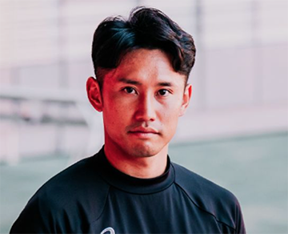

大胆にくり抜かれたアウターソールが、屈曲性と軽量性を生み出す。
より足と一体化することで、ピッチに力を伝え、今までにない感覚を。
安定したプレーに欠かせない3つの特徴
激しいカットイン時でも狙いをロックオン
DS LIGHT ACROSS3 はカットインモーション時に横ぶれを軽減すること。
足との一体感を生み出し、プレイヤーのキレを生み出す。
内外非対称の補強で、足の動きに追従
アッパーの内側を薄く、外側を厚くすることで切り返し時に
アッパーの内側は足に寄り添い、外側は剛性を発揮。
フィット性とホールド性、柔軟性を同時に発揮。
スタンビリティーソールがグリップ力を発揮
多くのフットボールプレイヤーが愛用する外付けヒールカウンター搭載のソール。
フラットな接地感と適度な反発性が特徴。
森下龍矢選手のインタビュー

| 生年月日 | 1997/4/11 |
|---|---|
| 身長/体重 | 170/65 |
| 出身 | 静岡県 |
ジュビロ岩田のアカデミー出身で2015年にはU-18日本代表に選2020年サガン鳥栖に入団し、 2試合連続ゴールを決めるなどしてプロ一年目からレギュラーに。2021年には名古屋グランパスに入団し、 2024年にレギア・ワルシャワへ移籍。
従来のアシックスのスパイクとの重量比較
2024年
重量:195g(26.5cm)
過去1番軽量スパイク
2018年
重量:205g(26.5cm)
DS LIGHT ACROSS 3
¥18.700
Sea Glass
DS LIGHT ACROSS 3
￥18.700
Gentry Purple
ACROSS PRO 3は足馴染みがいいです。
自分の足と一体化しているように感じます。